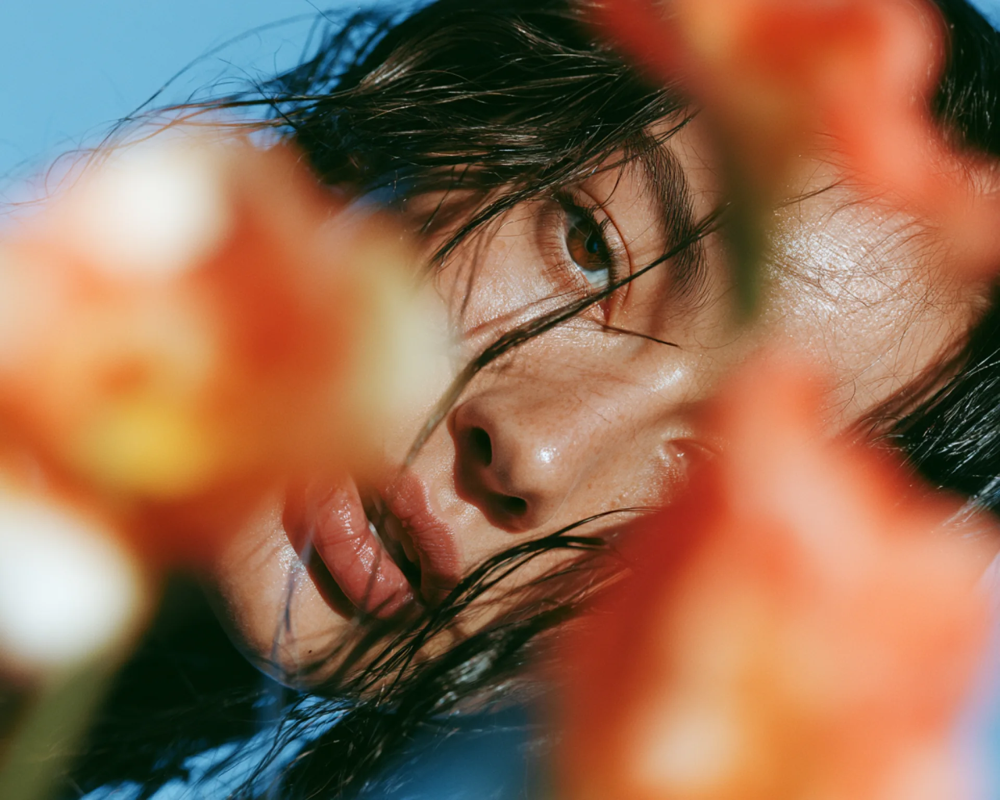

Могу помочь с видео: ролики для соцсетей, продуктовые и анимационные, OLV, цифровая наружка и заставки
для мероприятий. С фото: рекламные визуалы, предметка для каталогов и маркетплейсов, фуд, нейрофотосессии, AI-аватары, маскоты,
3D и иллюстрации. И с регулярным потоком: соберу стайлгайд и референсы, чтобы SMM, каталоги и сезонные кампании не расползались по стилю.
